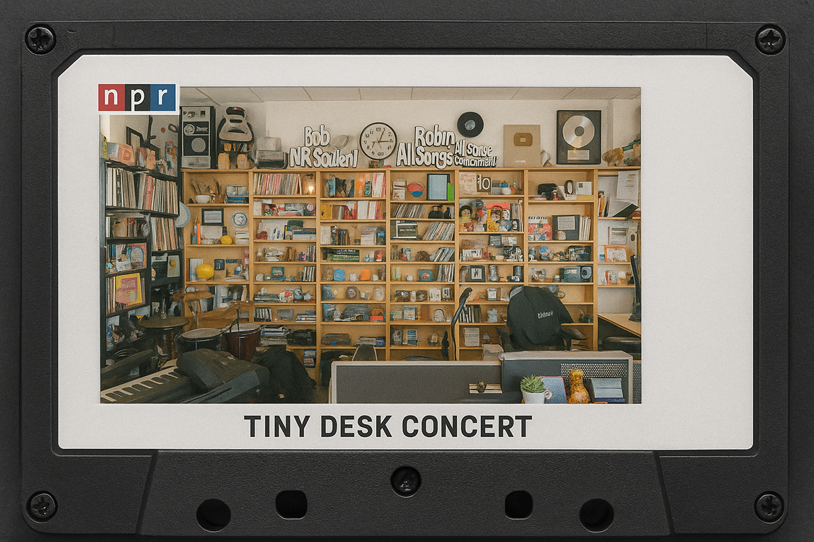
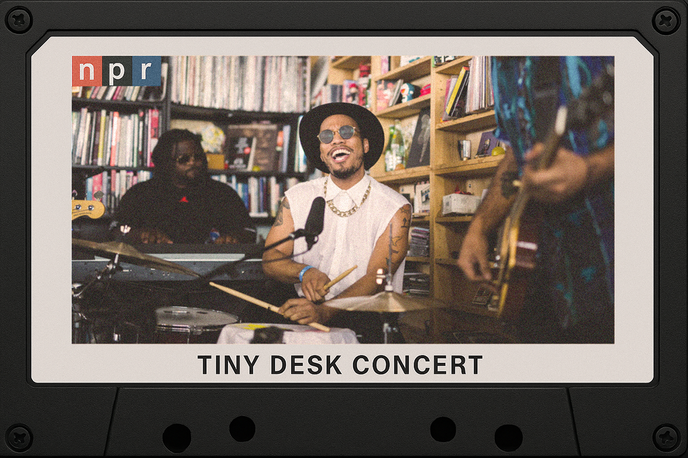
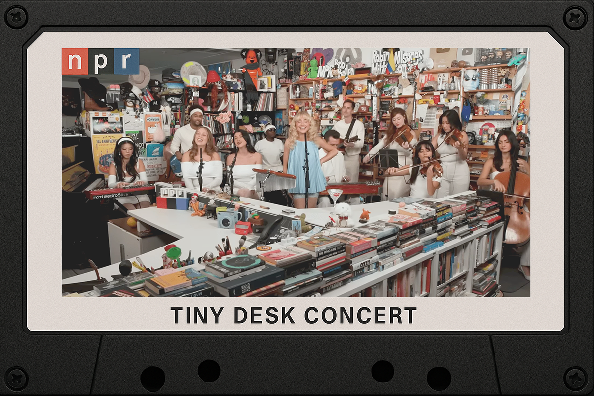
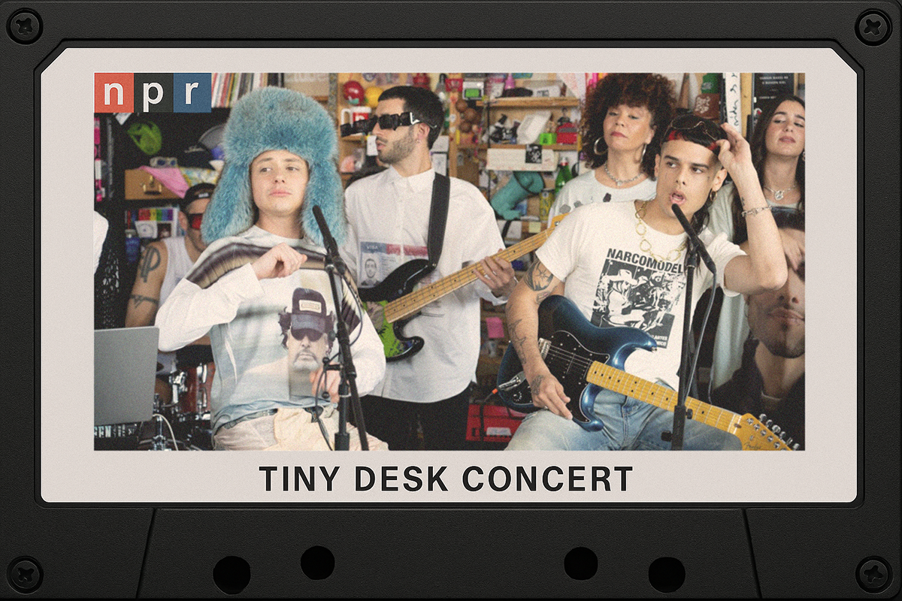

Tiny Desk: de humilde propuesta a fenómeno de internet
¿Cuáles fueron los cimientos de uno de los shows musicales más aplaudidos de Youtube?
¿Cuáles fueron los cimientos de uno de los shows musicales más aplaudidos de Youtube?

Si YouTube es uno de tus mejores amigos y además te consideras un melómano empedernido, no me sorprendería que conozcas el espacio Tiny Desk Concert. Ahora, si igualmente tienes un grupo o un cantante que ames y que actualmente la esté rompiendo, las posibilidades que conozcas el Tiny también son amplias.
De todas maneras, no nos extraña que estés viviendo bajo una piedra y que ni por enterado te hayas dado sobre este canal en la plataforma de vídeos. En serio, no te culpamos. Es por eso que aquí te explicamos de qué va el popular show Tiny Desk de NPR (corto para National Public Radio de Washington DC) y por qué deberías ponerle ojo y oreja a esta interesante propuesta.
El Tiny Desk Concert no es un proyecto nuevo. De hecho, comenzó el 2008 después de que uno de los productores de la radiodifusora NPR (quienes son los responsables de estos trabajos), Bob Boilen y uno de los editores, Stephen Thompson, imaginaran realizar una serie de conciertos de bajo perfil en la radio.
Pero como toda buena idea, esto no se pensó de la nada, es más, podríamos decir que el Tiny nació como una suerte de “necesidad”. Fue por la frustración de no ir a un concierto de la cantautora Laura Gibson que se cuestionaron el cómo sería que la oriunda de Oregon se presentara en su radio, tocando ahí mismo, en el escritorio de Bob Boilen.

Como una profecía, fue Laura la que dio el puntapié inicial a este exitoso formato, el que este año cumple 17 años activo.
Si quieres ver cómo comenzó esta historia, dale un vistazo al siguiente vídeo. Es que si hay algo rescatable sobre todo este proyecto, es que desde el día 1 estas sesiones fueron documentadas y subidas a YouTube, cuando la plataforma de vídeos todavía no era ni la mitad de popular que es ahora.
Al día de hoy, NPR cuenta con más de 11 millones de suscriptores en YouTube y le ha dado un espacio no solo a músicos locales o norteamericanos, sino que se ha vuelto una de las principales plataformas para conocer música de alrededor de todo el mundo. Pasando desde los artistas que están recién comenzando a hacerse de un espacio en la industria, hasta volverse un hito fundamental incluso para aquellos grupos y cantantes que ya se encuentran consolidados.
Sobre esto es que no puedo dejar de lado el hecho de que Adele, una de las principales vocalistas de esta generación, participó del Tiny Desk Concert el 2011. Esto fue cuando estaba recién reconociendo los primeros atisbos de fama fuera del Reino Unido gracias a su álbum estrella, “21”, o también la participación de la chilena Anita Tijoux el 2010, un par de años después de darle el puntapié inicial a los Tiny Desk.

No solo podemos hablar de la gran visión de Boilen y Thompson y de cómo transformaron el concepto de “música de en vivo” a una experiencia cercana (porque un grupo pequeño de personas puede disfrutar en vivo de estos espectáculos), sino que también se están moviendo con lo que la industria y los públicos piden, segmentando, diversificando y acomodándose a los desafíos del día a día.
Inolvidable fue su respuesta a la pandemia. Corría el año 2020 y las vidas del mundo dieron un vuelco de 180° al encontrarnos de frente con la quinta pandemia más mortífera en la historia de la humanidad. ¿Cómo enfrentamos el desafío de seguir cubriendo músicos alrededor del mundo si no tenemos el espacio para juntarnos?
Así nació Tiny Desk (Home), espacio igual de íntimo, que se trasladó a diferentes partes del globo y que mostraba a los artistas desde sus propias localidades, en sus propios países, haciendo lo que mejor saben hacer. Esto duró hasta el 2022, cuando se volvió al formato original del show, no sin tener una que otra presentación fuera de Washington bajo el mismo concepto de “home”.
Después llegó “El Tiny”, espacio para músicos latinoamericanos (recomiendo con ahínco darle una vuelta a estas presentaciones), y también se crearon las sublistas para Corea del Sur y Japón, propuestas bastante más incipientes, pero que reflejan una versión más original y orgánica de la vasta oferta de músicos y grupos del continente asiático, tan poco explorados en el otro lado del mundo.

Más de 1.200 artistas han pasado por el escenario (el original o en otro formato) a lo largo de estos casi 17 años funcionando. Varios de estos músicos consolidaron sus carreras con esta oportunidad o, incluso, lograron la fama al llegar a un público más diverso, que suele estar pendiente de las nuevas publicaciones de NPR.
T-Pain, Doechii, Ca7riel y Paco Amoroso y C. Tangana son solo algunos de los nombres que fueron parte de este gran line up de artistas participantes en los Tiny Desk y que se volvieron aún más reconocidos después de sus actuaciones en NPR.
Grandes también han sido los desafíos para los músicos que buscan mostrar nuevos formatos de sus ya conocidas canciones, con distintos tipos de arreglos, lo que hace notar una alta cuota de interés, preocupación y respeto por este espacio que con tanta consistencia ha logrado llegar donde está.
Los Tiny Desk Concerts tienen para rato. NPR sube muchísimos mini conciertos al mes y la oferta musical parece estar lejos de acabar, sobre todo con una industria que se renueva a una velocidad impresionante y con tanta propuesta musical, que escapa del habla inglesa, y que está esperando ser reconocida por los ojos del mundo.